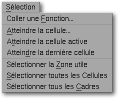

<!-- Documentation XQuad (c)1995-2000 AXENE contact axene@axene.org>
<html>

<head>
<title>Selection menu</title>
</head>

<body BGCOLOR="#FFFFFF" BACKGROUND="Images/back.gif" TEXT="#000000">

<p ALIGN="right">  </p>

<p><br>
<br>
The selection pulldown menu houses all commands to fastly reach some cells or to
automaticly select some spreadsheet elements<br>
</p>

<hr>

<p align="center"><br>
 <br>
<small><i>Screen shot: Selection pulldown menu</i></small></p>

<p><br>
</p>

<hr>

<p><br>
</p>

<h3>Le Selection menu contains the following options:</h3>

<ul>
  <li><a NAME="paste_function_menu_entry"><i>&quot;Paste Function...&quot;</i> <b>inserts a
    function name</b> in the </a><a HREF="Edit_Bar.html">edit bar</a>. It opens the '<a
    HREF="Box_PasteFunction.html">Paste Function</a> dialog box'. <br>
    &nbsp;</li>
  <li><a NAME="reach_cell_menu_entry"><i>&quot;Reach Cell...&quot;</i> <b>changes the active
    cell</b> by its coordinates and move the displayed area of the spreadsheet to make the
    active cell visible. It opens the '</a><a HREF="Box_ReachCell.html">Reach Cell</a>' dialog
    box. <br>
    &nbsp;</li>
  <li><a NAME="reach_active_cell_menu_entry"><i>&quot;Reach Active Cell&quot;</i> <b>moves the
    displayed area of the spreadsheet to have the active cell visible</b>. When you use the
    slider to scroll through the spreadsheet, the active cell remains the same. </a><br>
    &nbsp;</li>
  <li><a NAME="reach_last_cell_menu_entry"><i>&quot;Reach Last Cell&quot;</i> <b>changes the
    active cell to the last cell</b> and move the displayed area of the spreadsheet to make
    the active cell visible. The last cell is the lowest and rightmost cell containing data in
    the whole spreadsheet</a><br>
    &nbsp;</li>
  <li><a NAME="select_used_area_menu_entry"><i>&quot;Select used area&quot;</i> <b>selects the
    smallest area of cell containing data</b> (text, value or formula). </a><br>
    &nbsp;</li>
  <li><a NAME="select_all_cells_menu_entry"><i>&quot;Select all cells&quot;</i> <b>selects the
    whole spreadsheet</b> and the cell at position A1 becomes the active cell. Same effect can
    be obtained by clicking on the spreadsheet's</a><a HREF="Sheet_Headers.html#Origin">header
    origin</a> (intersection of the horizontal header bar and the vertical header).<br>
    &nbsp;</li>
  <li><a NAME="select_all_frames_menu_entry"><i>&quot;Select all frames&quot;</i> <b>Selects
    all the frames contained in the spreadsheet</b>. If a frame unfortunatly slipped out of
    the spreadsheet, this is the only way to get it back</a></li>
</ul>

<p><br>
</p>

<hr>

<p ALIGN="right"></p>
</body>
</html>
